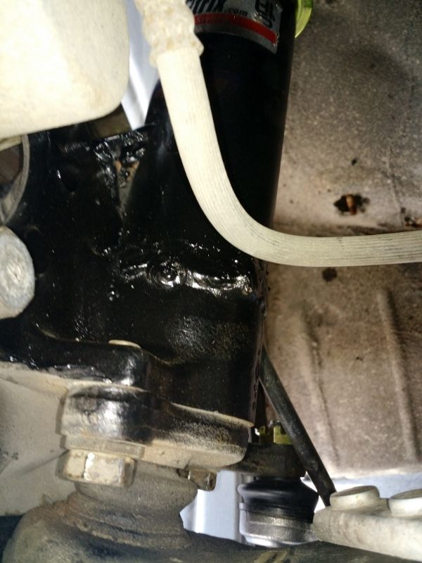

-
There is a difference between kouki and zenki with the angle of the spindle. However its negligible since you have camber adjustments up top and the track width is minimal. There is a difference between NA and turbo tubes, but they are cut low enough its all the same diameter.Originally posted by Raven View Post
Depending on what dust shields you use you may need to trim or switch rear seals on the hubs. All very easy to do.86na - BlueZ
Shiro #366 - Kouki Monster
85t - Mr Tickles -
Awesome that takes some stress off knowing that there is minimal differences. I don't have an issue with trimming the rear shields if I have to.
G-E: Sorry I forgot to get some good pictures. I was in a rush to get it all back together. I do have one of the driver side off the car and one of the passenger side (that failed) installed.
Here is the driver side…

…and the passenger side…
私♥フェアレディ・ゼット
・1984 300zx N/A -
just to clarify the wields that you just have fixed did not break? -
The picture of the spindle on the ground is the drivers side that did not fail. I re-welded them anyway when I added the gusset plate to them. The picture that shows one installed is the passenger side that failed.私♥フェアレディ・ゼット
・1984 300zx N/A

Copyright © 2006–. All rights reserved. Privacy Policy